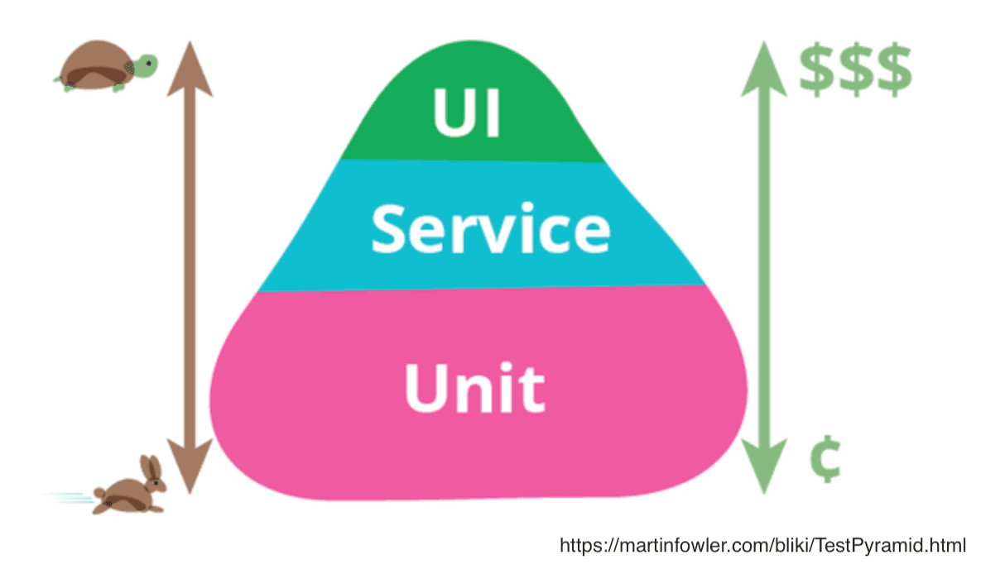

「なぜから始める、現場のVue.jsアプリの自動テスト」
@ 2019.07.25 Vue.js v-tokyo Meetup #10
About me

おしながき
- 発表のゴール
- 現場のVue.jsアプリ
- なぜテストを書くのか
- テストを書く理由と対応
- 投資対効果のいいテストをする指針
- まとめ
- 発表のゴール
- 現場のVue.jsアプリ
- なぜテストを書くのか
- テストを書く理由と対応
- 投資対効果のいいテストをする指針
- まとめ
発表の対象者
テスティングフレームワークなどのツールの使い方はわかるが、
実際の開発でどのように使えばいいのか悩んでる人
🎊 現場に合ったテストについて考えるきっかけになれば 🎊
話すこと
- テストはなぜ必要なのか
- テストするときの指針の紹介
- 現場で行ってるテストの事例
話さないこと
- コードレベルでのテスト実装方法
- 発表のゴール
- 現場のVue.jsアプリ
- なぜテストを書くのか
- テストを書く理由と対応
- 投資対効果のいいテストをする指針
- まとめ
カラーミーリピート
- Vue Fes Japan 2018でも話されてる
- Vue.jsアプリの規模としては、SFCが200個以上 (2019/07時点)
- 発表のゴール
- 現場のVue.jsアプリ
- なぜテストを書くのか
- テストを書く理由と対応
- 投資対効果のいいテストをする指針
- まとめ
そもそも、テストコードは絶対ないとダメなもの？
すべてをテストするわけではない
- テストコードは、サービスのユーザーに直接的な価値を生み出すものではない
- 使い捨てのコードなら、テストを書かない方が早く作業を終えられる
とはいえ、自分が担当するサービスにテストがなかったら
「えっ？それは大変そう...」
この差を考えると、
自分がなぜテストを必要と思っているかわかりそう
自分が考えたテストを書く理由
- 人に依存せずに繰り返し動作検証したいため
- 生きた仕様書(挙動・見た目)が欲しいため
- 発表のゴール
- 現場のVue.jsアプリ
- なぜテストを書くのか
- テストを書く理由と対応
- 投資対効果のいいテストをする指針
- まとめ
人に依存せずに繰り返し動作検証したいため
- 人(スキル・体調)によってどこまでテストするかのばらつきを無くしたい
- 開発フローに組み込むことで、リリース前に意図しない挙動・見た目を検知したい
対応
- テストを書く
- CIを整備する
生きた仕様書(挙動・見た目)が欲しいため
- 開発対象の理解を補助したい
- ソースコードだけではなく、テストコードがあることで内容を理解しやすくなる
- 見た目に関するドキュメントがあると、コミュニケーションがスムーズになる
- 機能追加時に、関連する既存機能のUIをさっと確認できる
対応
- BDDのように、テストケースで要求仕様で言語化する
- Visual Regression Testingを導入する
- BDDのように、テストケースで要求仕様で言語化する
- Visual Regression Testingを導入する
Visual Regression Testing の よいところ
- 見た目の検証の安心感が増す
- Storybookを使うことで、UIのエッジケースも検証できる
.toContain()などで検証するのに比べて、表示位置やスタイルも検証できる
- デザイナーとの協業がしやすい
- テストコードをデザイナーが直すのは難しいが、VRTなら見た目で可否を判断できる
- Storybookが拡充できるので、見た目のドキュメントができる
Visual Regression Testing の 注意点
- 誤検知しがちなテストにしない (テストの信頼性が下がって、割れ窓になってしまう)
- インテグレーションテスト中にスクリーンショットを撮るのをやめた
- アニメーションなど動きがあるものはテストできない
- 目視で確認
- チームメンバーにStoryを書いてもらう努力 (チームで使うツールにならないと廃れる)
- 自分が手本になるStoryを書く・レビューする (VRTの環境整備していくぞという気概)
- 発表のゴール
- 現場のVue.jsアプリ
- なぜテストを書くのか
- テストを書く理由と対応
- 投資対効果のいいテストをする指針
- まとめ
The Testing Trophy
- Kent C. Doddsが提唱
- 元PayPalのエンジニアで、現在はJSテストなどの講師
- JSアプリのテストの種類ごとの投資対効果のガイド
- テストの種類ごとの投資対効果で面積の広さが決まる (広いほど効果が高い)
- ただし、テストの種類ごとの割合は厳密なルールではない
- 前述の割合は一般的なものなので、現場によって多少変化してもよい
TestPyramidとは何が違う？ 🤔
The Testing Trophy の よいところ
- テストがもたらす安心感という指標を追加
- TestPyramidは、実行速度・実装コストのみ
- JSアプリのテストに特化
- テストの種類に、Static(Linter・静的型解析)が追加
これを指針に、Vue.jsアプリのテストを考えてみるとよさそう！
自分の現場アプリを、
The Testing Trophyにあてはめて見直してみる
Static
(Linter・静的型解析を使って、typoや型エラーをチェック)
- LinterはESLintを導入している
- 静的型解析は導入していない (TypeScriptの導入は検討中)
Unit
(単一の処理の振る舞いをチェック)
- Store
- Validation rules
- Filters
Integration
(複数の処理を組み合わせた時の振る舞いをチェック)
- SFCの動作
- フォーム入力 ➡️ バリデーション ➡️ 結果検証
- Visual Regression Testing
- Props, Storeからデータを受け取る ➡️ コンポーネントの表示
E2E
(アプリケーションを動かして、シナリオ通りに動作するかをチェック)
- 今のアプリでは何もしてない
- クリティカルな部分(e.g. checkout)にはテストがあると安心感が増してよさそう
- しかし現状だと、VRTの拡充の方が投資対効果高いと考えて、後回しに
- (もし、こんな感じでE2Eやるとよかったよ！がある方は懇親会でお話させてください🙏)
これから改善したいこと
- 静的型解析の導入 (型エラーをチェックできる)
- Storybookを拡充する (VRTのカバー範囲を増やす)
- 発表のゴール
- 現場のVue.jsアプリ
- なぜテストを書くのか
- テストを書く理由と対応
- 投資対効果のいいテストをする指針
- まとめ
- 自分なりのなぜテストを書くのかを説明
- 人に依存せずに繰り返し動作検証したいため
- 生きた仕様書(挙動・見た目)が欲しいため
- 投資対効果のいいテストを書く指針として、The Testing Trophyの紹介
- 指針に沿って現場のテストを見直し